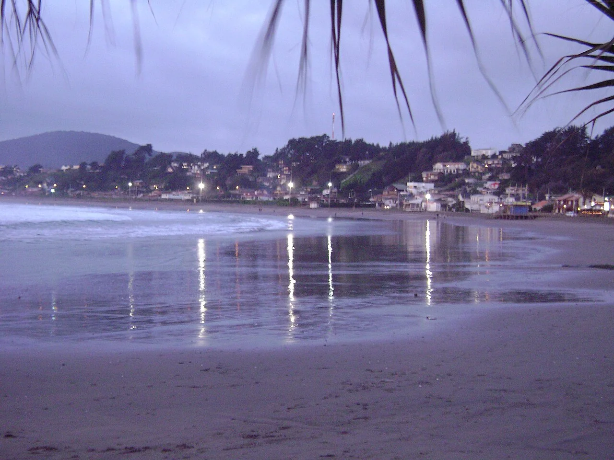

Maitencillo — El Abanico
Valparaíso, Chili · surf

Une plage de Maitencillo dans la région de Valparaíso. El Abanico est un point de rencontre des surfeurs du secteur.
- Lieu
- Valparaíso, Chili
- Niveau
- Variable selon les conditions
- Activités
- surf
- Type d'eau
- Mer / océan
- Coordonnées
- -32.65, -71.43 (position approximative du secteur)
Ouvrir dans Ocean Buddy Télécharger sur l'App Store
Source : Chile Travel.